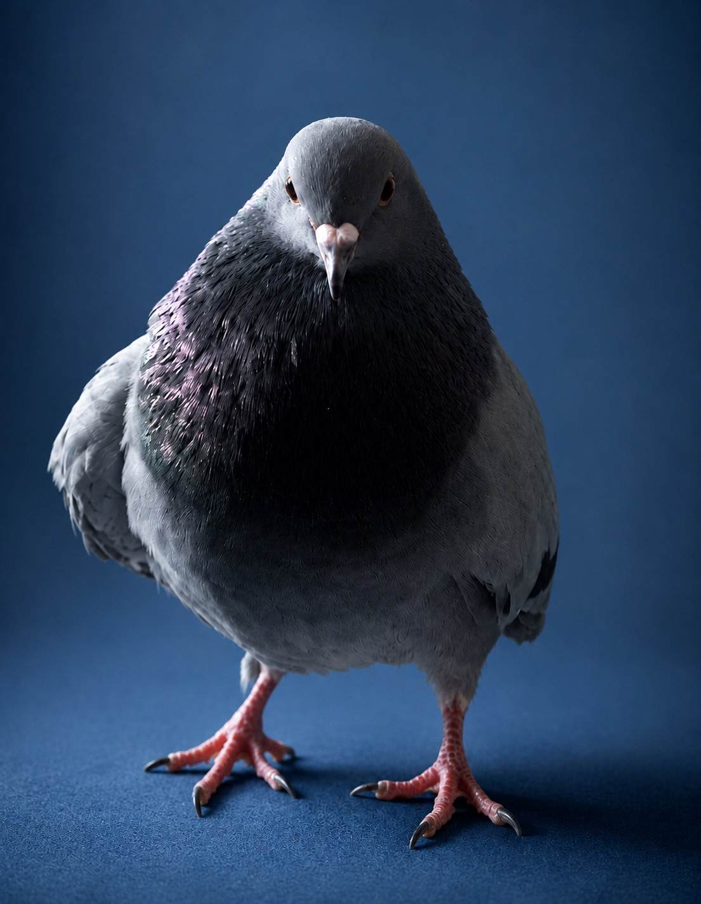

ADOPTED
Are you looking for a feisty pigeon in your life? Maybe one that has the survival story to show off a little, but can still capture your heart (or your hen's)? Brute could be perfect for you!
Brute is one of those classic blue bar pigeons you'd see on the street. He lived his whole life as a feral bird until January 2026. A concerned citizen saw him struggling to fly and took him home. Brute came in with a broken wing but was otherwise okay. Initially, we believed Brute couldn't fly, but he quickly proved us wrong when he shot out of his carrier at the vet.
Brute is a very feisty bird. He wing slaps anyone who gets close to him... or his cage. He'll stand his ground for some time before he makes a grand escape, which usually means flying well out of reach and taunting you with a side-eye. But around hens? This little dude is ALL the drama. Dancing. Cooing. Fanning his tail. Ready for some loving attention from a hen who wants all of his sass.
